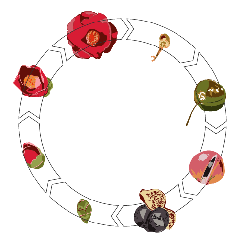
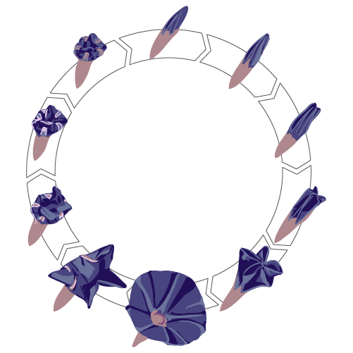
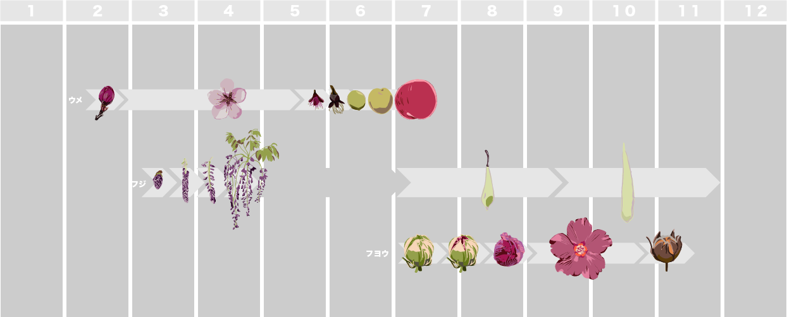

概要
暦の再認識
正確な時刻や暦は日常生活において必要である。高精度なものほどいいという価値がある。 一方で、場所や季節による環境変化の違いは無視され、均質化している。 人類が発展させてきた「時間を精密に測定する技術」の影にある、自然環境の一年の流れに注目し、 グラフィカルに表現した。
太陰暦/ 不定時法/ グレゴリオ暦/ 世界標準時UTC/ 土地固有の時間の認識枠組み/共通の時間の認識枠組み
題材

１年：ツバキの花芽から種子

１日：アサガオの開花から閉花
植物の時間で
時の流れ（一年 /一日）を表す
１年：ツバキの開花から閉花 １日：アサガオの開花から閉花 ∵開花には日照（夜の長さ）や気温が関係しているので、環境変化を表す指標として見れる
目的
概日リズムの多様性を意識させる
一つずつの植物のサイクルを意識させる作品を作る。それを重ねることで、一年の流れを見出す。

ウメ、フジ、フヨウの一年のサイクルを並べた図
手段

UVプリンタを用いた多層印刷